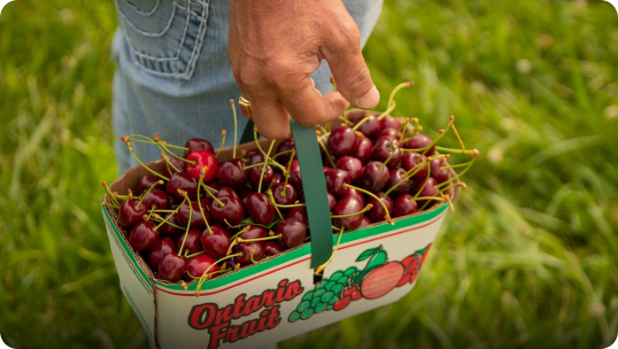
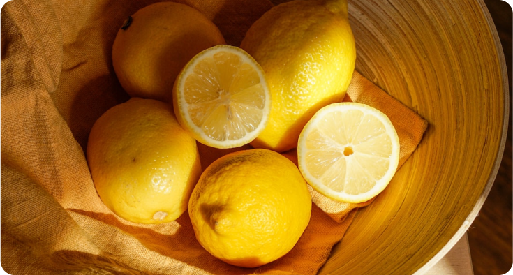

Cómo iniciar una granja: agricultores y ganaderos principiantes
¿Nuevo en la agricultura? ¿Quieres aprender a iniciar una granja? El USDA puede ayudar y ofrece asistencia adicional a los agricultores y ganaderos principiantes.
Missouri agriculture is still navigating the effects of a tough drought. Ag Director Chris Chinn says feed costs remain high for livestock producers and a mild winter with additional moisture would be welcome.
“Precipitation to help fill back up our ponds and things of that nature.” Drought conditions have improved and Chinn says it shows on the river with Mississippi River levels in the southern part of the state higher than this time last month. “Levels are expected to move up to 19 or 20 feet this week. That’s good news, we’re able to move grain down the Mississippi River. However, we know that we’re very behind on rainfall. There is a significant area of our state that need a lot of precipitation so we can have a successful growing season.”
The latest U.S. Drought Monitor says 59% of Missouri remains dry. Disaster relief is also available for producers through the Farm Service Agency.
Pie de foto: is still navigating the effects of a tough drought. Ag Director Chris Chinn says feed costs remain high for livestock producers and a mild winter with additional moisture would be welcome.
Missouri agriculture is still navigating the effects of a tough drought. Ag Director Chris Chinn says feed costs remain high for livestock producers and a mild winter with additional moisture would be welcome.
“Precipitation to help fill back up our ponds and things of that nature.” Drought conditions have improved and Chinn says it shows on the river with Mississippi River levels in the southern part of the state higher than this time last month. “Levels are expected to move up to 19 or 20 feet this week. That’s good news, we’re able to move grain down the Mississippi River. However, we know that we’re very behind on rainfall. There is a significant area of our state that need a lot of precipitation so we can have a successful growing season.”
The latest U.S. Drought Monitor says 59% of Missouri remains dry. Disaster relief is also available for producers through the Farm Service Agency.
“Gravo es una empresa especializada en el desarrollo y la implantación de sistemas para el tratamiento del agua.”
Rebeca Castillo Granadino
Dirección Regional MetropolitanaInformación relacionada
- Conoce más sobre el trabajo que desarrolla el Monterey Bay Aquarium Research Institute (MBARI) en: https://www.mbari.org/
- Revisa las próximas expediciones científicas en las que participará el robot desarrollado en la UC: https://schmidtocean.org/cruise/interdisciplinary-investigation-of-new-hydrothermal-vent-field/